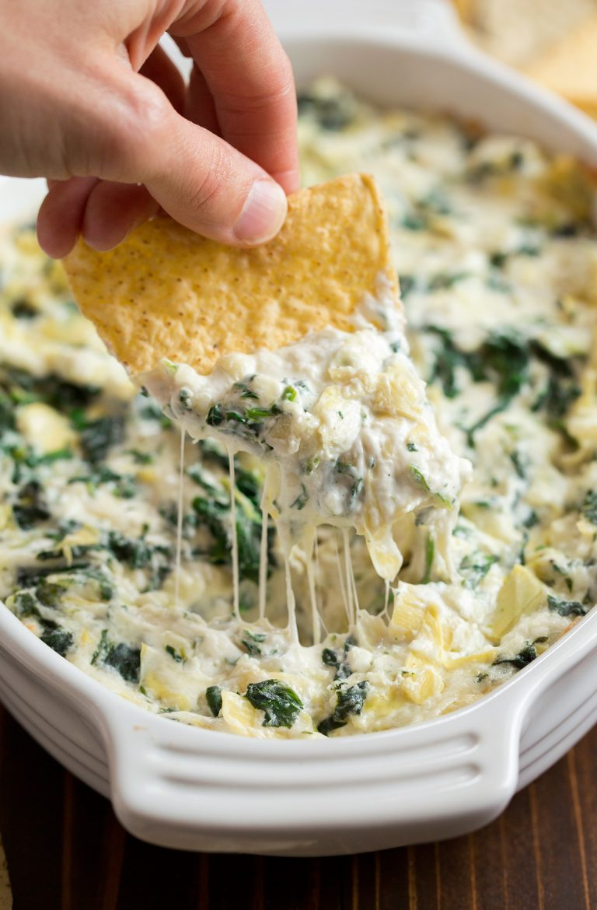

Spinach & Artichoke DIp

Original Recipe Link
Description
This recipe will walk you through making your favorite spinach artichoke dip recipe from start to finish
Ingredients
- 8 oz. cream cheese, well softened
- 1/4 cup sour cream
- 1/4 cup mayonnaise
- 1 garlic clove, minced (1 tsp)
- 2/3 cup (76g) finely shredded parmesan cheese
- 1/2 cup (56g) finely shredded mozzarella cheese
- Pepper, to taste
- 1 (14 oz) can quartered artichoke hearts, can liquid drained, squeeze artichokes to drain excess liquid, chopped
- 6 oz. frozen spinach, thawed, squeezed to drain excess fluid
Steps
- Preheat oven to 350 degrees. Spray a small (1 quart) baking dish with non-stick cooking spray.
- In a mixing bowl stir together cream cheese, sour cream, mayonnaise, garlic, parmesan, mozzarella, and pepper.
- Stir in artichokes and spinach.
- Spread mixture evenly into prepared baking dish. Bake in preheated oven until heated through and melty, about 20 minutes.
- Serve warm with tortilla chips, crackers or toasted baguette slices